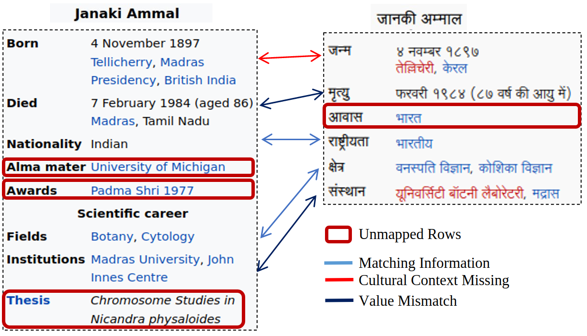
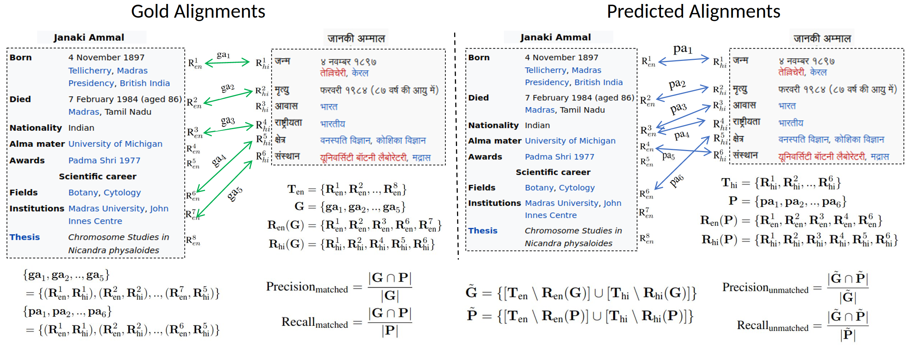

Information Synchronization Across Multilingual Semi-Structured Tables
About
The representation of information across languages poses significant challenges, particularly when it comes to the synchronization of semi-structured data. Wikipedia is a notable example, with the English version comprising only 11.68% of all pages despite having the greatest number of editors (75). 94% of the global population does not have access to comprehensive information in their native language. The majority of non-English Wikipedia pages are outdated and inadequately maintained. Moreover, Wikipedia translations are frequently inaccurate. An illustration of the issue is provided below.

Promoting inclusivity and facilitating global knowledge sharing requires ensuring accurate representation and bridging the language gap. Maintaining the consistency and integrity of Wikipedia tables across multiple languages requires meticulous attention to detail. This will pave the way for the creation of a trustworthy, comprehensive, and language-inclusive knowledge source.
The objective of introducing the InfoSync dataset and employing a two-step method for tabular synchronization is to provide effective solutions to this problem.
Dataset Details
To systematically assess the challenge of information synchronization and evaluate the methodologies, we build a large-scale table synchronization dataset InfoSync based on entity-centric Wikipedia Infoboxes.
We collected a dataset comprising approximately 99,440 infoboxes and 1,078,717 rows. The dataset included information in multiple languages, namely English, German, French, Spanish, Dutch, Arabic, Hindi, Chinese, Korean, Afrikaans, Cebuano, and Swedish. The infoboxes covered various categories such as Airport, Album, Animal, Athlete, Book, City, College, Company, Country, Diseases, Food, Medicine, Monument, Movie, Musician, Nobel, Painting, Person, Planet, Shows, and Stadium. This diverse dataset serves as the foundation for our research analysis and experimentation.
| Average Table Transfer % | Language Statistics | |||
|---|---|---|---|---|
| C1 -> Σ ln | Σ ln -> C1 | # Table | Average Rows | |
| af | 17.46 | 400.5 | 1575 | 9.91 |
| ar | 34.02 | 27.38 | 7648 | 13.01 |
| ceb | 42.87 | 134.88 | 3870 | 7.82 |
| de | 40.73 | 27.12 | 8215 | 7.88 |
| en | 45.85 | 0.32 | 12431 | 12.60 |
| es | 38.78 | 9.0 | 9950 | 12.59 |
| fr | 41.25 | 4.73 | 10858 | 10.30 |
| hi | 18.39 | 358.97 | 1724 | 10.91 |
| ko | 31.13 | 40.51 | 6601 | 9.35 |
| nl | 33.69 | 24.6 | 7837 | 10.46 |
| ru | 36.98 | 14.54 | 9066 | 11.41 |
| sv | 35.53 | 24.62 | 7985 | 9.89 |
| tr | 28.99 | 59.33 | 5599 | 10.14 |
| zh | 36.16 | 32.71 | 7140 | 12.43 |
| Topic | # Table | Average Rows |
|---|---|---|
| Airport | 18512 | 9.66 |
| Food | 6184 | 7.93 |
| Album | 5833 | 7.58 |
| Animal | 3209 | 8.27 |
Test Sets
We created several test sets to evaluate the alignment accuracy of our pipeline for different configurations.
-
Translations Based Test Set:
For the translation-based test sets, we employed translations (Google or cutting-edge translation models) and covered approximately 1500 tables for both English to X and X to Y alignments. Here, X and Y represent non-English languages. Annotators obtained preliminary alignments from our alignment pipeline. The goal was to evaluate and verify the veracity of these alignments, remedy any errors, and add any missing ones.
-
Native Speaker Annotated True Test Set:
Similarly, we created a second test set without using translations; instead, native speakers of the language completed alignment annotations (English and Hindi, English and Chinese, roughly 200 tables in each language pair).
-
Metadata
Human annotators also classify the types of errors present in the test data in one of the five categories 1) Disambiguation 2) Multiple alignments 3) Partial or incorrect extraction 4) Wrong_translations 5) Key Paraphrasing. This evaluation helps standardizing and comparing update methods against each other.
Synchronization Methodology
Our proposed approach for table synchronization involves two steps:
- Information Alignment, which focuses on aligning table rows. We utilize corpus statistics from Wikipedia, considering both key and value-based similarities to align rows in multilingual tables.
- Information Update, which aims to update missing or outdated rows across different language pairs to ensure consistency.
We evaluate the effectiveness of both tasks using the InfoSync dataset. Additionally, we conduct an online experiment adhering to Wikipedia editing guidelines, where we submit detected mismatches for review by Wikipedia editors. We track the number of edits approved or refused by the editors.
Information Alignment
The proposed method consists of five modules designed to generate additional alignments sequentially by aligning table rows with relaxed matching requirements.
-
Corpus-based: Aligns rows based on the cosine similarity of their English translations, taking multiple translations into account using majority voting. Accurate key translations take into account additional context, such as key values and categories.
-
Key-only: Attempts to align unaligned pairs from the previous module by computing cosine similarity of their English translations, with a threshold for selecting mutually most similar keys.
-
Key value bidirectional: Similar to the previous step, but computes similarities using the entire row (key + value) and applies a threshold for alignment.
-
Key value unidirectional: Relaxes the bidirectional mapping constraint by considering the highest similarity in either direction, using a higher threshold to avoid spurious alignments.
-
Multi-key: Allows for the selection of multiple keys (up to two) based on a threshold, with a soft constraint for value-combination alignment. Valid multi-key alignment occurs when the merge value-combination similarity score exceeds that of the most similar key.
In summary, these five modules progressively relax the matching requirements, incorporating different aspects of the table rows, to generate alignments based on cosine similarity scores.
Alignment Example And Evaluation

Information Updation
We proposed a rule-based heuristic approach for information updates. These rules are applied sequentially according to their priority rank (P.R.).
-
Row Transfer (R1): Unaligned rows are transferred from one table to another.
-
Mutli-Match (R2): Updating the table by handling multi-alignments and merging information to address cases with multiple key alignments.
-
Time Based (R3): Updating aligned values using the latest timestamp to ensure the information reflects the most current data.
-
Trends positive/negative (R4): Updating values based on identified monotonic patterns (increasing or decreasing) over time, particularly applicable to athlete career statistics.
-
Append Values (R5): Appending additional value information from an up-to-date row to update outdated rows.
-
HR to LR (R6): Transferring information from a high resource language to a low resource language to update outdated information.
-
#Rows (R7): Transferring information from a table with a greater number of rows to a table with fewer rows.
-
Non Popular Keys (R8): Updating information from a table where recently added non-popular keys are likely to exist in order to update outdated tables.
Updation Example
Below is an update example. The infobox for Shirley Strickland de la Hunty has been updated to include information in both English and Spanish. It shows rows transfer for missing information, value substitution because "Aged 78" is absent in Died. Additionally, one medal infomation (Bronze,1952, 100m) is added in to medal tally.
Human Assisted Wikipedia Updates
Information update results are given to human editors for updating Wikipedia infoboxes. Following Wikipedia's guidelines, rule set, and policies, update requests were submitted with other evidence supporting the claim. This evidence consists of the up-to-date entity page URL in the source language, the specific table rows information along with the source language, details of the proposed changes, and an additional citation provided by the editor for further validation.
| Accepted | Rejected | Total | |
|---|---|---|---|
| Eng => X | 161 | 43 | 204 |
| X => Y | 169 | 47 | 216 |
| X => English | 136 | 47 | 183 |
| Total | 466 | 137 | 603 |
People
The InfoSync dataset is prepared by collaboration of across multiple institutions University of Utah, IIT Guwahati, CTAE and Bloomberg LP by the following people:

Citation
Please cite our paper as below if you use the InfoSync dataset.
@inproceedings{khincha-etal-2023-infosync,
title = "{I}nfo{S}ync: Information Synchronization across Multilingual Semi-structured Tables",
author = "Khincha, Siddharth and
Jain, Chelsi and
Gupta, Vivek and
Kataria, Tushar and
Zhang, Shuo",
booktitle = "Findings of the Association for Computational Linguistics: ACL 2023",
month = jul,
year = "2023",
address = "Toronto, Canada",
publisher = "Association for Computational Linguistics",
url = "https://aclanthology.org/2023.findings-acl.159",
pages = "2536--2559",
abstract = "Information Synchronization of semi-structured data across languages is challenging. For example, Wikipedia tables in one language need to be synchronized with others. To address this problem, we introduce a new dataset InfoSync and a two-step method for tabular synchronization. InfoSync contains 100K entity-centric tables (Wikipedia Infoboxes) across 14 languages, of which a subset ({\textasciitilde}3.5K pairs) are manually annotated. The proposed method includes 1) Information Alignment to map rows and 2) Information Update for updating missing/outdated information for aligned tables across multilingual tables. When evaluated on InfoSync, information alignment achieves an F1 score of 87.91 (en {\textless}-{\textgreater} non-en). To evaluate information updation, we perform human-assisted Wikipedia edits on Infoboxes for 532 table pairs. Our approach obtains an acceptance rate of 77.28{\%} on Wikipedia, showing the effectiveness of the proposed method.",
}
Acknowledgement
Authors thank members of the Utah NLP group for their valuable insights and suggestions at various stages of the project; and ACL 2023 reviewers for pointers to related works, corrections, and helpful comments. Authors thank the largest free resource Wikipedia for InfoSync tables.